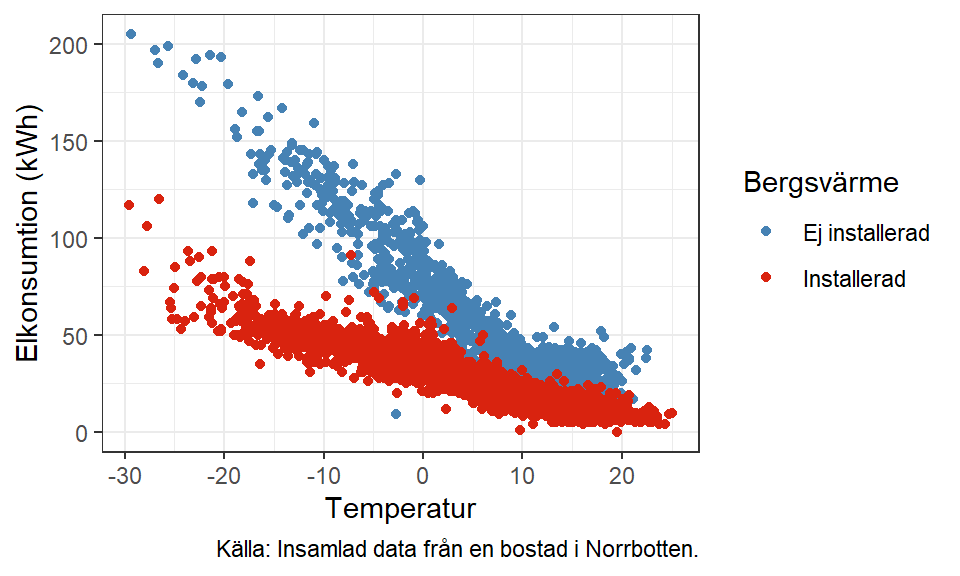
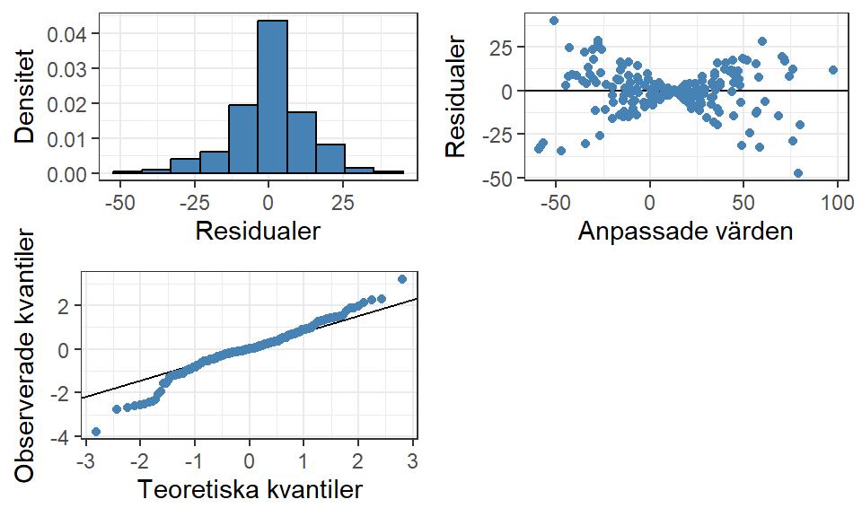
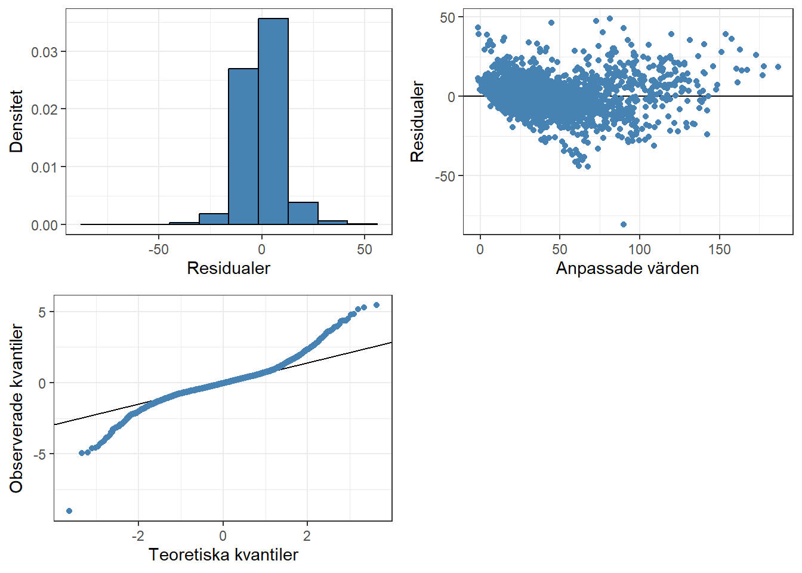

power <- read.csv2(file = "electricityconsumption.csv", dec = ".") %>%
dplyr::mutate(Bergsvärme = Bergsvärme %>% as_factor()) %>%
dplyr::filter(!(Bergsvärme %>% is.na() | Dygnsmedel %>% is.na()))7 Komplexa samband
I det utforskande steget av en undersökning kan vi ibland identifiera mer komplexa typer av samband mellan en förklarande variabel och responsvariabeln. Exempelvis identifierade vi i Figur 2.6 grupper av punkter som visade ett positivt samband medan punktsvärmen överlag visade på ett negativt samband. Den linjära regressionsmodellen kan också med hjälp av vissa transformeringar modellera icke-linjära samband.
7.1 Interaktioner
Ibland kan en kombination av flera variabler förändra effekten som variablerna har enskilt med en responsvariabel. Till exempel kan temperaturens effekt på elkonsumtionen (länk till datamaterialet ) i en bostad påverkas av förekomsten av bergvärme.
Läs in materialet och filtera bort saknade värden med:
Visa kod
ggplot(power) +
aes(x = Dygnsmedel, y = Energi_KWh, color = Bergsvärme) +
geom_point() +
theme_bw() +
scale_color_manual(values = c("steelblue", "#d9230f"),
labels = c("Ej installerad", "Installerad")) +
labs(x = "Temperatur", y = "Elkonsumtion (kWh)", caption = "Källa: Insamlad data från en bostad i Norrbotten.")

Figur 7.1 visar två olika samband mellan temperatur och elkonsumtion beroende på om observationen (tidpunkten) mätte sambandet när bergsvärme var installerad i bostaden eller ej. När bergsvärme finns verkar påverkan av temperatur vara mindre (\(\beta = -1.432\)) än när bergsvärme saknas (\(\beta = -3.626\)), förändringen i elkonsumtion för varje ökad grad av temperatur har förändrats.
För att modellen ska plocka upp variablernas synergi med varandra skapas en interaktion som en produkt av, i det enklaste fallet, de två variablerna och läggs till i modellen med en ytterligare tillhörande lutningsparameter.
7.1.1 Interaktion mellan en kvalitativ och en kvantitativ variabel
En utav de enklare formerna av en interaktion är mellan en kvalitativ och en kvantitativ variabel, som vi såg ett exempel på i Figur 7.1. Om vi ser ett sådant fenomen i ett spridningsdiagram tyder det på att de två variablerna interagerar med varandra för att skapa olika lutningsparametrar.
\[ \begin{aligned} Y_i = \beta_0 + \beta_1 \cdot \text{temperatur}_i + \beta_2 \cdot \text{bergsvärme}_i + \beta_3 \cdot \text{temperatur}_i \cdot \text{bergsvärme}_i + E_i \end{aligned} \] där \(\text{bergsvärme}_i\) är en indikatorvariabel som indikerar 1 om bergsvärme förekommer och 0 annars.
Kodningen av indikatorvariabeln betyder att vi egentligen får två olika möjliga utfall av modellen, en när \(\text{bergsvärme}_i = 1\) och en när \(\text{bergsvärme}_i = 0\).
\[ \begin{aligned} Y_{i|\text{bergsvärme} = 1} &= \beta_0 + \beta_1 \cdot \text{temperatur}_i + \beta_2 \cdot 1 + \beta_3 \cdot \text{temperatur}_i \cdot 1 + E_i \\ &= \beta_0 + \beta_1 \cdot \text{temperatur}_i + \beta_2 + \beta_3 \cdot \text{temperatur}_i + E_i\\ &= \underbrace{( \beta_0 + \beta_2 )}_{\beta_0^*} + \underbrace{(\beta_1 + \beta_3)}_{\beta_1^*} \cdot \text{temperatur}_i + E_i\\ \\ Y_{i|\text{bergsvärme} = 0} &= \beta_0 + \beta_1 \cdot \text{temperatur}_i + \beta_2 \cdot 0 + \beta_3 \cdot \text{temperatur}_i \cdot 0 + E_i\\ &= \beta_0 + \beta_1 \cdot \text{temperatur}_i + E_i \end{aligned} \] När \(\text{bergsvärme}_i = 1\) skapas en enkel linjär modell med ett ‘nytt’ intercept \(\beta_0^*\) och en ny lutningsparameter \(\beta_1^*\). \(\beta_2\) och \(\beta_3\) är alltså den kategoriska variabelns påverkan på regressionslinjens intercept respektive lutning. Vi kan generellt säga att med flera kategorier (indikatorvariabler) skapas flera varianter av modellen med en referenslinje när alla indikatorer är 0, och en linje för varje indikator som blir 1 där interceptet och lutningen förändras jämfört med referenslinjen.
För att skapa en interaktion i modellen med hjälp av R kan symbolen * användas:
model <- lm(Energi_KWh ~ Dygnsmedel * Bergsvärme, data = power)
summary(model) %>%
coef() %>%
round(3) %>%
kable(col.names = c("Variabel", "Skattning", "Medelfel", "t-värde", "p-värde")) %>%
kable_styling("striped")| Variabel | Skattning | Medelfel | t-värde | p-värde |
|---|---|---|---|---|
| (Intercept) | 80.115 | 0.328 | 244.008 | 0 |
| Dygnsmedel | -3.626 | 0.030 | -119.777 | 0 |
| Bergsvärme1 | -45.664 | 0.375 | -121.610 | 0 |
| Dygnsmedel:Bergsvärme1 | 2.194 | 0.035 | 62.308 | 0 |
Eftersom bergsvärme anges som en faktorvariabel hanterar R detta korrekt (se Avsnitt 3.1) och hade även gjort det om det fanns flera kategorier. I detta fall skapas endast en ny variabel mellan indikatorvariabeln och den numeriska då det endast fanns två kategorier (en indikatorvariabel). Om fler indikatorvariabler hade skapats från den kvalitativa variabeln, hade fler interaktioner skapats, en för varje kombination av indikatorvariabel och kontinuerlig variabel.
Vi kan tolka dessa skattningar som att om bostaden har bergsvärme installerad, sänks förbrukningen vid 0 grader med ca 45 kWh och temperaturens påverkan på konsumtionen förändras med ca 2.2 kWh mindre per ökad grad1 jämfört med en bostad utan bergsvärme. Vi får alltså två modeller:
\[ \begin{aligned} \hat{Y}_{i|\text{bergsvärme} = 1} &= ( 80.115 + -45.664 ) + (-3.626 + 2.194) \cdot \text{temperatur}_i \\ \\ \hat{Y}_{i|\text{bergsvärme} = 0} &= 80.115 + -3.626 \cdot \text{temperatur}_i \end{aligned} \] som vi kan visualisera i det tidigare diagrammet med:
Visa kod
ggplot(power) +
aes(x = Dygnsmedel, y = Energi_KWh, color = Bergsvärme) +
geom_point() +
theme_bw() +
scale_color_manual(values = c("steelblue", "#d9230f"),
labels = c("Ej installerad", "Installerad")) +
labs(x = "Temperatur", y = "Elkonsumtion (kWh)", caption = "Källa: Insamlad data från en bostad i Norrbotten.") +
## Lägga till regressionslinjer
# Ej installerad (Referenslinjen)
geom_abline(
intercept = coef(model)[1],
slope = coef(model)[2],
color = "black",
linewidth = 1,
linetype = 2
) +
# Installerad
geom_abline(
intercept = coef(model)[1] + coef(model)[3],
slope = coef(model)[2] + coef(model)[4],
color = "black",
linewidth = 1
)7.1.1.1 Simpson’s paradox
7.1.2 Interaktion mellan två kvantitativa variabler
En interaktion mellan två kvantitativa variabler är svårare att visualisera och identifiera. Anta att vi har ett datamaterial som består av två förklarande variabler och en responsvariabel där det sanna sambandet inkluderar en interaktion mellan de förklarande variablerna.
Visa kod
# Antal observationer
n <- 200
set.seed(64)
## Skapa ett datamaterial
data <-
tibble(
x1 = runif(n = n, min = 0, max = 5),
x2 = rnorm(n = n, mean = 0, sd = 3),
y = 10 + 1.5*x1 - 1.5*x2 - 3*x1*x2 + rnorm(n = n)
)
## Utforskning av materialet
p1 <- ggplot(data) + aes(x = x1, y = y) + geom_point(color = "steelblue") + theme_bw()
p2 <- ggplot(data) + aes(x = x2, y = y) + geom_point(color = "steelblue") + theme_bw()
p3 <- ggplot(data) + aes(x = x1, y = x2) + geom_point(color = "steelblue") + theme_bw()
cowplot::plot_grid(p1, p2, p3)
Med detta enkla exempel med endast två variabler och deras interaktion kan vi visualisera materialet med ett fåtal diagram och utläsa att modellen uppvisar någon form av komplext samband som inte de enskilda förklarande variablerna kan modellera. Desto fler förklarande variabler som finns minskar effektiviteten att identifiera interaktioner från enskilda parvisa diagram, vilket innebär att vi oftast identifierar behov av interaktioner utifrån modellanpassningar och residualanalys.
Visa kod
dåligModell <- lm(y ~ x1 + x2, data = data)
residualPlots(dåligModell)Likt när vi tittar på en potentiell interaktion mellan en kvalitativ och kvantitativ variabel visas det tydligt i residualerna mot de anpassade värdena att det saknas något samband i modellen då residualerna inte uppvisar konstant varians. Även normalfördelningsdiagrammen identifierar långa svansar med många värden i extremerna.
Visa kod
braModell <- lm(y ~ x1 * x2, data = data)
residualPlots(braModell)Nu ser residualerna bättre ut och det verkar som att modellen är en korrekt representation av sambandet.
Till skillnad från Avsnitt 7.1.1 kommer tolkningar av interaktioner mellan två kvantitativa variabler bli betydligt svårare. Modellen kan inte på ett enkelt sätt ‘förenklas’ likt i det kvalitativa fallet men på ett ungefär kan vi säga att lutningsparametern för interaktionen påverkar lutningsparametern för respektive grundvariabel.
\[ \begin{aligned} Y_i &= \beta_0 + \beta_1 \cdot X_{i1} + \beta_2 \cdot X_{i2} + \beta_3 \cdot X_{i1} \cdot X_{i2} + E_i \\ &\qquad \qquad \qquad \text{alternativt} \\ Y_i &= \beta_0 + \beta_1 \cdot X_{i1} + (\beta_2 + \beta_3 \cdot X_{i1}) \cdot X_{i2} + E_i\\ \\ Y_i &= \beta_0 + (\beta_1 + \beta_3 \cdot X_{i2}) \cdot X_{i1} + \beta_2 \cdot X_{i2} + E_i \end{aligned} \] Eftersom vi i en multipel linjär regression tolkar parameterskattningar som att den förklarande variabeln förändrar responsvariabeln givet att alla andra variabler är fixa kommer en tolkning av en förändring i en förklarande variabel innebära att Y förändras på två platser. I den första alternativa formuleringen ser vi hur en förändring av \(X_{i1}\) leder till att Y förändras både via \(\beta_1\) och hur \(X_{i2}\)s samband med Y (\(\beta_2\)) förändras med anledning av \(\beta_3\).
Det vi kan göra för att tolka en variabels effekt på responsvariabeln är att kombinera alla termer som omfattar variabeln och visualisera dens sammanfattande effekt givet att alla andra variabler är konstanta. För en interaktion mellan två kontinuerliga variabler kan vi fixera olika värden på den ena variabeln och modellera den andra variabelns effekt mot responsvariabeln. Ett vanligt sätt att göra detta är att fixera med hjälp av medelvärdet och en standardavvikelse åt båda hållen.
Visa kod
summary(braModell) %>%
coef() %>%
round(3) %>%
kable(col.names = c("Variabel", "Skattning", "Medelfel", "t-värde", "p-värde")) %>%
kable_styling("striped")| Variabel | Skattning | Medelfel | t-värde | p-värde |
|---|---|---|---|---|
| (Intercept) | 9.960 | 0.155 | 64.063 | 0 |
| x1 | 1.466 | 0.052 | 28.279 | 0 |
| x2 | -1.538 | 0.053 | -29.287 | 0 |
| x1:x2 | -2.981 | 0.017 | -176.049 | 0 |
Visa kod
# Tar ut skattade koefficienter från modellen med interaktion
b <- coef(braModell)
meanX2 <- mean(data$x2)
sdX2 <- sd(data$x2)
intData <-
tibble(
# Skapa olika värden av x1 givet värdemängden
x1 = seq(min(data$x1), max(data$x1), by = 0.01),
y1 = b[1] + (b[2] + b[4]*(meanX2 - sdX2))*x1 + b[3] * (meanX2 - sdX2),
y2 = b[1] + (b[2] + b[4]*(meanX2))*x1 + b[3] * (meanX2),
y3 = b[1] + (b[2] + b[4]*(meanX2 + sdX2))*x1 + b[3] * (meanX2 + sdX2)
) %>%
pivot_longer(
!x1
)
ggplot(intData) + aes(x = x1, y = value, color = name) + geom_line(linewidth = 1) +
scale_color_manual(expression(X[2]), values = c("steelblue", "#d9230f", "black"), labels = expression(mu - sigma, mu, mu + sigma)) +
theme_bw() + labs(x = expression(X[1]), y = "Y")
Varning
Om fördelningen av \(X_2\) inte är symmetrisk kan valet av ovanstående fixa värden vara missvisande. Om vi vill visualisera olika värden bör vi fundera över vilka som faktiskt är lämpliga att använda.
Det vi kan utläsa från Figur 7.2 är att effekten av \(X_1\) är positiv för låga värden av \(X_2\) och vänder till negativ för höga värden av \(X_2\). I ett enkelt fall som denna går det att visa och till viss del tolka interaktionens effekt på ett någorlunda tydligt sätt, men i en mer komplex modell blir det direkt rörigt. Vi bör istället titta på residualanalyser och annan utvärdering av modellen för att bedöma om interkationen gör att modellen blir bättre. Avvägningen mellan modellens komplexitet och dess träffsäkerhet är än mer viktig att diskutera för att modellen ska uppnå sitt syfte.
7.1.3 Identifiera interaktion
Vanligtvis kan vi få ledtrådar om interaktioner i de parvisa sambanden, speciellt om det är en interaktion beskriven i Avsnitt 7.1.1, men ibland är det svårt att direkt se ifall en interaktion behövs. Det är också svårt att utläsa mellan exakt vilka variabler som interaktionen finns. Med hjälp av grupperade spridningsdiagram likt Figur 7.1 (kvalitativa och kvantitativa) eller 3D-diagram (kvantitativa och kvantitativa) kan sambandet mellan par av förklarande variabler och responsvariabeln undersökas. Vi kan också skapa potentiella interaktioner och modellera dessa mot responsvariabeln i ett spridningsdiagram.
Visa kod
ggplot(data) + aes(x = x1*x2, y = y) + geom_point(color = "steelblue") +
theme_bw() + labs(x = "Interaktion", y = "Y")
Diagrammet visar ett starkt negativt linjärt samband mellan interaktionen och responsvariabeln, vilket antyder att interaktionen har en betydande roll i modelleringen. Med flera variabler kommer antalet interaktioner som skulle kunna skapas öka exponentiellt
Det går också att utläsa från residualanalysen ifall modellen inte plockar upp något samband med responsvariabeln men även med hjälp av dessa diagram kan det vara svårt att utläsa exakt vad för samband som saknas och vilka variabler som behöver justeras. Det är i detta läge som spridningsdiagram över residualerna uppdelat på de olika förklarande variablerna kan ge en indikation på vad som behöver justeras.
Låt oss anpassa en felaktig modell utan interaktion och titta på residualerna:
Visa kod
residualPlots(model = lm(Energi_KWh ~ Dygnsmedel + Bergsvärme, data = power))Det är framförallt i diagrammet överst till höger som det syns att modellen saknar att modellera någon form av samband mellan variablerna.
Visa kod
modelNoInt <- lm(Energi_KWh ~ Dygnsmedel + Bergsvärme, data = power)
visData <-
tibble(
Residualer = resid(modelNoInt),
X1 = power$Dygnsmedel,
X2 = power$Bergsvärme
)
ggplot(visData) + aes(x = X1, y = Residualer) +
geom_point(color = "steelblue") +
theme_bw() + labs(x = "Temperatur")
Visa kod
ggplot(visData) + aes(x = X2, y = Residualer) +
geom_violin(fill = "steelblue") +
theme_bw() + labs(x = "Bergsvärme")
Om vi sedan visualiserar residualerna uppdelat på de två förklarande variablerna kan vi utläsa ett korsliknande mönster i den kvantitativa variabeln vilket antyder att vi har gruppvisa samband.
Visa kod
residualPlots(model = model) När interaktionen lagts till ser residualerna mycket bättre ut, dock inte helt perfekta för just denna modell.
Visa kod
modelInt <- lm(Energi_KWh ~ Dygnsmedel * Bergsvärme, data = power)
visData <-
tibble(
Residualer = resid(modelInt),
X1 = power$Dygnsmedel,
X2 = power$Bergsvärme
)
ggplot(visData) + aes(x = X1, y = Residualer) +
geom_point(color = "steelblue") +
theme_bw() + labs(x = "Temperatur")Residualerna mot temperatur har nu inte samma korsliknande mönster vilket har plockats upp av interaktionen dock syns ett svagt icke-linjärt mönster och framförallt problem med lika varians.
7.2 Polynom
Vi kan modellera vissa typer av icke-linjära samband mellan x och y genom att genomföra lämpliga transformationer av x, exempelvis polynomtermer. Vi simulerar ett datamaterial för att illustrera detta.
## Simulera data
set.seed(2323)
# Skapa 100 observationer
n <- 100
# Slumpa värden mellan -5 och 15 från den likformiga fördelningen
x <- runif(n = n, min = -5, max = 15)
# Skapa responsvariabeln genom en kvadratisk funktion och lägg till slumpvariation med rnorm()
y <- 4-1*x+0.2*x^2 + rnorm(n = n)Vi kan visualisera detta datamaterial för att se ett icke-linjärt samband mellan de två variablerna. Eftersom vi utför simulering vet vi också vad de sanna parametrarna för modellen ska vara, vilket vi kan stämma av i senare utskrifter.
Visa kod
## Lägg in de två variablerna i ett datamaterial för ggplot2
data <-
tibble(
X = x,
Y = y
)
ggplot(data) + aes(x = X, y = Y) +
geom_point(color = "steelblue") + theme_bw() 
Om vi testar att först anpassa en “vanlig” linjär regression och utvärderar residualerna kommer vi se att residualantagandet om linjäritet inte uppfylls.
Visa kod
model <- lm(Y ~ X, data = data)
residualPlots(model)
Dessa residualer ser inte bra ut, egentligen inte för någon utav antaganden, men det är främst residualerna mot de anpassade värdena som visar på det största problemet. Vi ser ett tydligt krökt mönster i punkterna som indikerar på att modellen inte är korrekt strukturerad.
Vi kan anpassa polynom på olika sätt. Ett enkelt sätt att göra är att inkludera en ny variabel i datamaterialet som är en transformation av den förklarande variabeln, till exempel skapa \(X^2\) som en ny kolumn.
Visa kod
# Sparar över det gamla materialet
data <-
data %>%
# Skapar en ny variabel som kvadraten av x
mutate(
X2 = x^2
)
# Anpassa en ny modell
model <- lm(Y ~ ., data = data)
summary(model) %>%
coef() %>%
round(3) %>%
kable(col.names = c("Variabel", "Skattning", "Medelfel", "t-värde", "p-värde")) %>%
kable_styling("striped")| Variabel | Skattning | Medelfel | t-värde | p-värde |
|---|---|---|---|---|
| (Intercept) | 4.240 | 0.151 | 28.103 | 0 |
| X | -1.057 | 0.042 | -24.930 | 0 |
| X2 | 0.204 | 0.004 | 55.630 | 0 |
Visa kod
residualPlots(model)
Denna modell ser ut att uppfylla modellantaganden eftersom vi har lagt till en variabel som tar hänsyn till det icke-linjära samband som X har med Y. Parameterskattningarna som vi får från modellen stämmer också till stor del överens med den sanna modell som vi simulerat materialet ifrån.
7.2.1 Centrering
När polynom används är det önskvärt att centrera eller standardisera grundvariablerna som används för polynomen. Detta görs för att minska de värden som modellen använder till sin anpassning (beräkningskomplexitet) och för att variablerna skapas utifrån varandra och har ett starkt beroende mellan sig (multikollinearitet, Avsnitt 8.1). Det finns många problem med starka beroenden mellan förklarande variabler och ett utav dem är att höga kovarianser leder till icke-informativ inferens.
Visa kod
# Skapa centrerad data
dataCent <-
data %>%
mutate(
# Centrera variabeln x med hjälp av scale()
# Standardisering kan göras genom argument scale = TRUE
XCent = X %>% scale(center = TRUE, scale = FALSE),
X2Cent = XCent^2
)Vi kan med hjälp av colMeans() se medelvärden för de icke-centrerade och centrerade variablerna. Det finns en stor skillnad, främst för polynomens medelvärde vilket visar på syftet med centrering, att reducera värden som används inom modellanpassningen.
Visa kod
colMeans(dataCent) %>%
round(3) %>%
kable(col.names = "Medelvärde") %>%
kable_styling(full_width = FALSE)| Medelvärde | |
|---|---|
| X | 5.399 |
| Y | 11.555 |
| X2 | 63.871 |
| XCent | 0.000 |
| X2Cent | 34.727 |
När vi anpassar en modell med polynom finns det också ett alternativt sätt att göra det på. Vi har i de tidigare exemplen skapat polynomet som en ny variabel i datamaterialet och kan inkludera den variabeln (X2 eller X2Cent) i modellstrukturen för lm(). Vi behöver egentligen inte skapa en ny variabel, och det brukar vi inte heller göra i praktiken om det ska skapas flera polynom av olika grad. Istället kan vi i formeln ange hur vi vill transformera grundvariabler med hjälp av I(X^2) där exponenten anger graden av polynomet. Om vi inte använder I() runt vår beräkning kommer R inte skapa ett polynom.
Visa kod
# Anpassa ny modell med centrerad x
modelCent <- lm(Y ~ XCent + X2Cent, data = dataCent)
# Alternativt
modelCent <- lm(Y ~ XCent + I(XCent^2), data = dataCent)
summary(modelCent) %>%
coef() %>%
round(3) %>%
kable(col.names = c("Variabel", "Skattning", "Medelfel", "t-värde", "p-värde")) %>%
kable_styling("striped")| Variabel | Skattning | Medelfel | t-värde | p-värde |
|---|---|---|---|---|
| (Intercept) | 4.475 | 0.168 | 26.681 | 0 |
| XCent | 1.144 | 0.019 | 61.526 | 0 |
| I(XCent^2) | 0.204 | 0.004 | 55.630 | 0 |
Visa kod
residualPlots(modelCent)
Modellen får olika parameterskattningar för grundvariabeln jämfört med den icke-centrerade modellen (Tabell 7.2) eftersom variablerna som används till anpassningen har olika tolkningar. När vi centrerar en variabel tolkas lutningsparametern som när den förklarand variabelns avstånd från sitt medelvärde ökar med ett, förändras y med parameterns värde. Däremot ser vi att parametern för polynomet är densamma samt att residualerna från modellen också är det.
En centrering av variabler för polynom ändrar alltså inte hur bra modellen är på att anpassa responsvariabeln men förenklar bakomliggande beräkningar och förändrar tolkningar av parameterskattningar.
7.3 Övningsuppgifter
I detta kapitel introduceras två datamaterial som kommer återkomma i efterföljande kapitel.
7.3.1 Infektionsrisker vid sjukhus
SENIC står för the Study on the Efficacy of Nosocomial Infection Control (Haley m.fl. 1980) och behandlar olika sätt att identifiera och kontrollera infektioner som uppstår på sjukhus. Datamaterialet består utav ett slumpmässigt urval om 113 sjukhus från de 338 undersökta. Materialet inkluderar följande variabler:
ID: Ett ID nummer för respektive sjukhus,Length_of_stay: Genomsnittligt antal dagar en patient stannar på sjukhuset,Age: Genomsnittlig ålder (år) på en patient,Infection_risk: Genomsnittlig uppskattad sannolikhet (i procent) att smittas av en infection på sjukhuset,Routine_culturing_ratio: Kvoten mellan antalet odlingar som genomförts med antalet patienter utan symtom på infektion (multiplicerat med 100),Routine_chest_X_ray_ratio: Kvoten mellan antalet röntgenbilder som genomförts med antalet patienter utan symtom på lunginflammation (multiplicerat med 100),Number_of_beds: Genomsnittlig antal sjukhussängar (platser) vid sjukhuset under undersökningsperioden,Medical_school_affiliation: Ja/Nej om sjukhuset är kopplat till en läkarutbildning (1 = Ja, 2 = Nej),Region: Sjukhusets geografiska område (1 = Nordost, 2 = Mellanvästern, 3 = Syd, 4 = Väst),2Average_daily_census: Genomsnittligt antal patienter vid sjukhuset under undersökningsperioden,Number_of_nurses: Genomsnittligt antal heltidsanställda licensierade sjuksköterskor under undersökningsperioden (antal heltids + 0.5 antal deltidsanställda),Available_facilties_and_services: Andel av 35 möjliga anläggningar och tjänster ett sjukhus kan erjbuda.
Datamaterialet kan laddas ner här.
Efter att ha laddat ner datamaterialet, skapa en designmatris med variablerna:
- \(X_1 =\)
Length_of_stay - \(X_2 =\)
Age - \(X_3 =\)
Routine_chest_X_ray_ratio - \(X_4 =\)
Medical_shool_affiliation
Koda \(X_4\) så att 1 betyder att sjukhuset är kopplat till en läkarutbildning och 0 annars.
Visualisera de parvisa samband mellan de fyra förklarande variablerna och responsvariabeln. Är det något i dessa diagram som sticker ut som motiverar att en mer komplex modell behöver anpassas?
Anpassa en regressionsmodell med infektionsrisken (
Infection_risk) som responsvariabel och alla variablerna i designmatrisen ni skapat som förklarande variabler. Utvärdera modellen med hjälp av residualanalys och fokusera på att kontrollera antagandet om linjäritet.Vissa forskare tror att det kan finnas en interaktion mellan variablerna \(X_2\) och \(X_4\) samt mellan \(X_3\) och \(X_4\) i relation till responsvariabeln. Utgå från modellen i b) och lägg till lämpliga interaktionstermer till designmatrisen för dessa två samband och anpassa en ny modell (med sex förklarande variabler).
- Utvärdera modellen med hjälp av residualanalys och jämför med diagrammen från b). Hur har modellen blivit bättre?
- Testa med ett test om interaktionstermerna kan uteslutas.
7.3.2 Bostadsuthyrning
Datamaterialet för denna övning innehåller en responsvariabel (\(Y\) = uthyrningskostnad i tusentals dollar) och fyra förklarande variabler:
- \(X_1\) = ålder (år),
- \(X_2\) = driftkostnad och skatt (tusentals dollar),
- \(X_3\) = vakansgrad (andel),
- \(X_4\) = yta (kvadratfot)
Datamaterialet kan laddas ner här.
Visualisera de parvisa samband mellan de fyra förklarande variablerna och responsvariabeln. Är det något i dessa diagram som sticker ut som motiverar att en mer komplex modell behöver anpassas?
Anpassa en regressionsmodell där Y förklaras av \(X_1\), \(X_2\) och \(X_4\). Utvärdera modellen med hjälp av residualanalys och fokusera på att kontrollera antagandet om linjäritet.
Anpassa två regressionsmodeller:
- Modell 1: \(Y\) som responsvariabel och \(X_1\), \(X_1^2\), \(X_2\) och \(X_4\) som förklarande variabler.
- Modell 2: Samma variabler som i modell 1, men \(X_1\) centreras: \(X_{1,c} = X_1 - \bar{X}_1\) där \(\bar{X}_1\) är medelvärdet för \(X_1\).
Ta fram parameterskattningarna för de båda modellerna och jämför koefficienterna för de icke-centrerade och centrerade variablerna.
Beräkna korrelationsmatrisen för designmatrisen från de båda modellerna, avrundade till 2 decimaler. Undersök hur de två matriserna skiljer sig åt och fundera kring vilken effekt som centrering haft.
Följande uppgifter använder sig av modell 2.
Utvärdera modellen med hjälp av residualanalys och jämför med diagrammen från b). Hur har modellen blivit bättre?
Skatta medelvärdet av \(Y\) med ett 95-procentigt konfidensintervall för följande observation \(\{X_1 = 8, X_2 = 16, X4 = 250 000\}\). Tolka intervallet.3
Referenser
Haley, Robert, DANA QUADE, HOWARD FREEMAN, och JOHN BENNETT. 1980. ”The SENIC Project. Study on the efficacy of nosocomial infection control (SENIC Project). Summary of study design”. American journal of epidemiology 111 (juni): 472–85. https://doi.org/10.1093/oxfordjournals.aje.a112928.